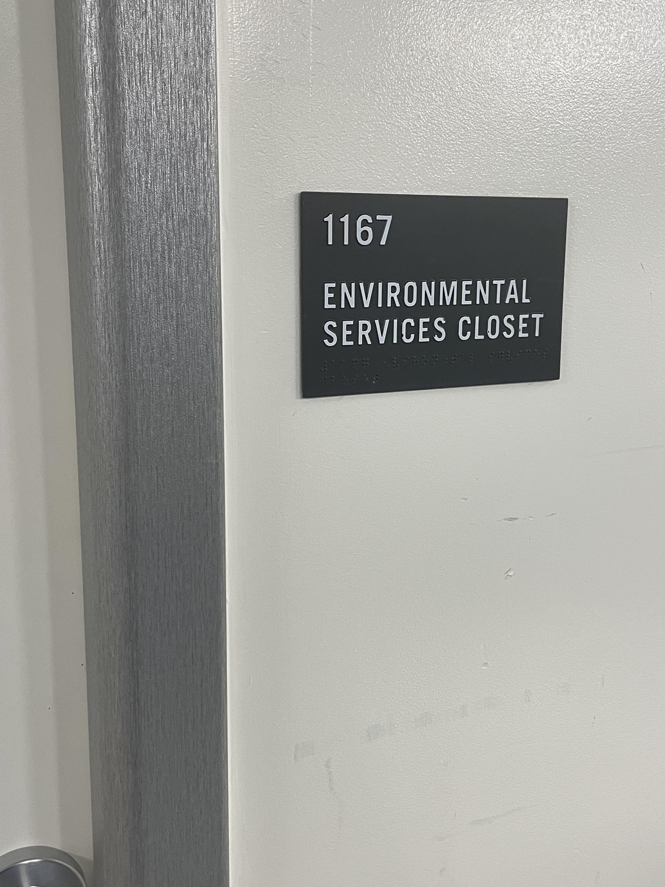
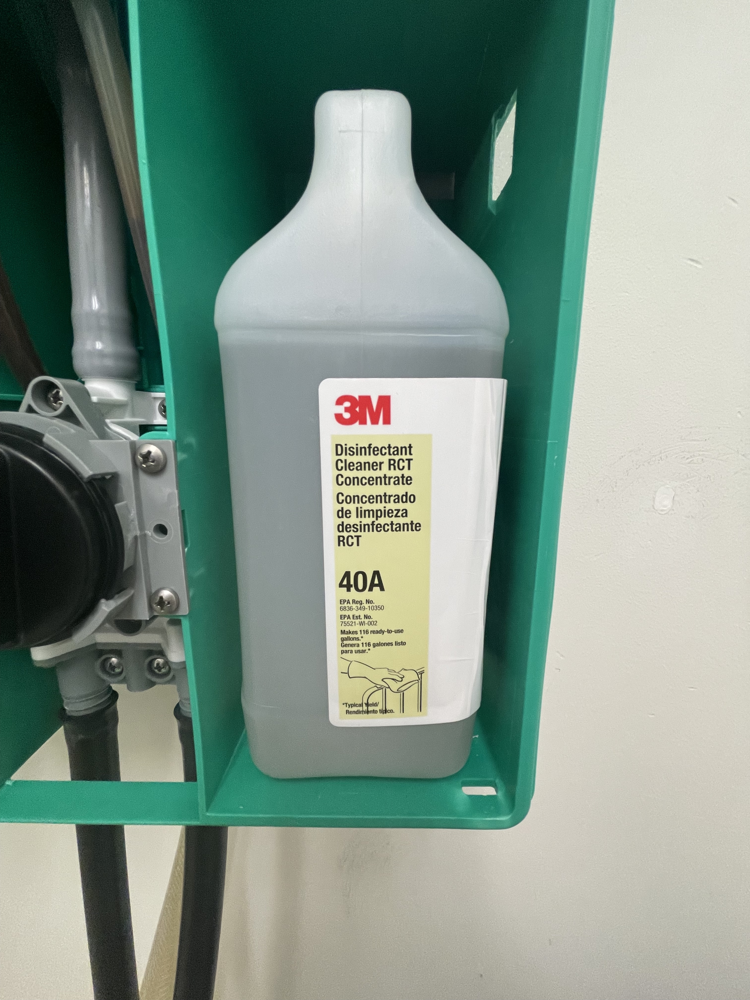
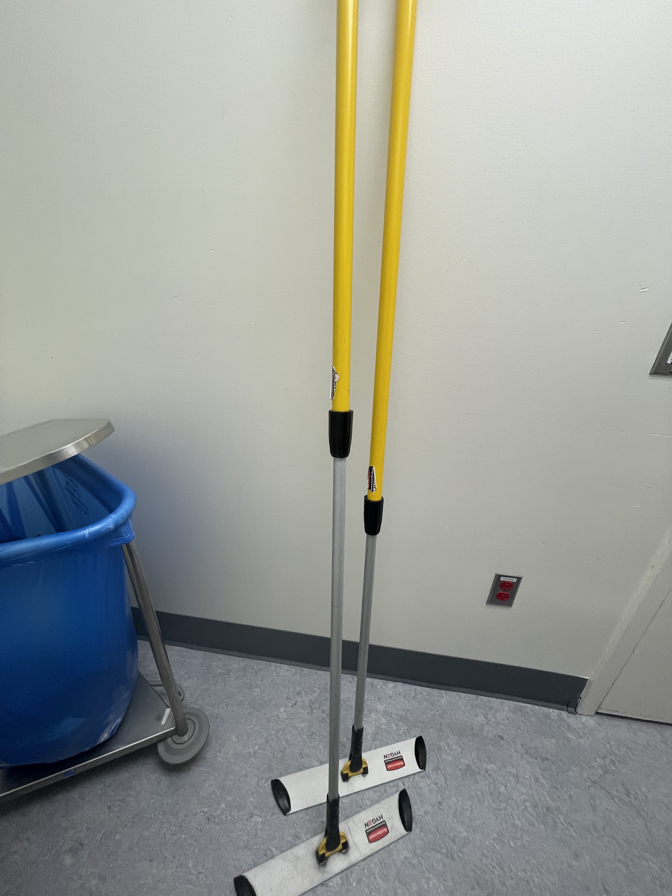
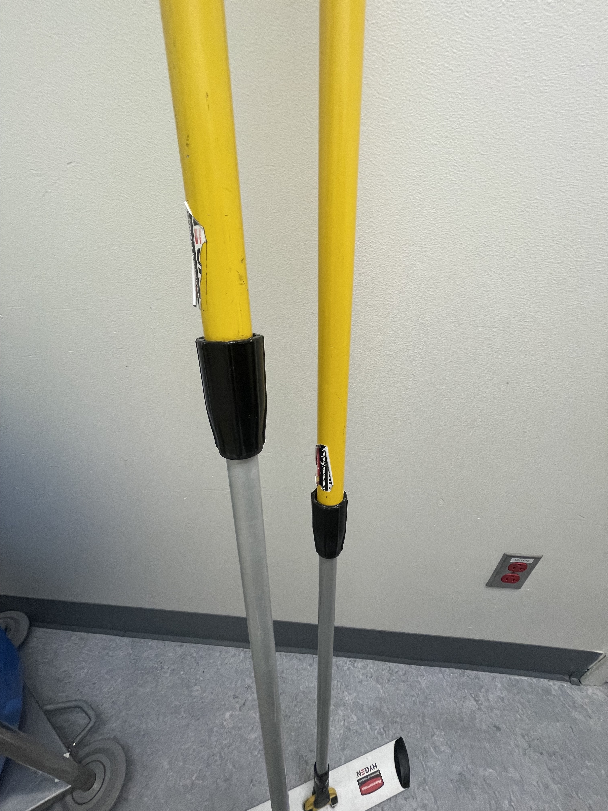

How to: Preparing to clean an OR
By Nicole Perez
Step 1: Locating the proper cleaning materials
In the Environmental Services Closet, you will find the items needed for cleaning an operating room. These include;
- yellow buckets
- microfiber towels
- microfiber mop heads
- mop handle
- cleaning solution

Step 2: What happens if I am exposed to the solution?!
Knowing where the safety data sheets (previously referred to as Material Safety Data Sheets, or MSDS) for any chemical being used is extremely important (see step 3 for PPE list). In the event you have been exposed to a chemical, immediately rinse your eyes/wash your hands. Notify the charge nurse and refer to the safety data sheet (SDS).

Step 3: How to dispense the disinfectant solution
Don your PPE (see list below). To fill a bucket with fluid, you can do two different steps. First option- hold the bucket under the straight hose from the bottom of the dispenser and turn the knob to the left (spray bottle image). The other option is to use the hose with a handle. Turn the knob to the right (cleaning cart image) – the solution will flow automatically out of either hose, so be prepared!
PPE:
- Eye Protection
- Gloves
- Mask

Step 4: Towels and Mops. How many is enough?
Each bucket should hold enough microfiber towels and mops as needed for the particular room you are cleaning. Most often, 3-4 towels and one mop will be sufficient, however some surgeries will require more clean up and therefore more towels.

Step 5: Adjusting the mop handle (save your back!)
The mop handles are adjustable. To adjust the handle, twist the black knob (to the left) in the middle of the handle, loosening the handle. Push the handle down or pull up, then tighten the handle by twisting the to the right.

